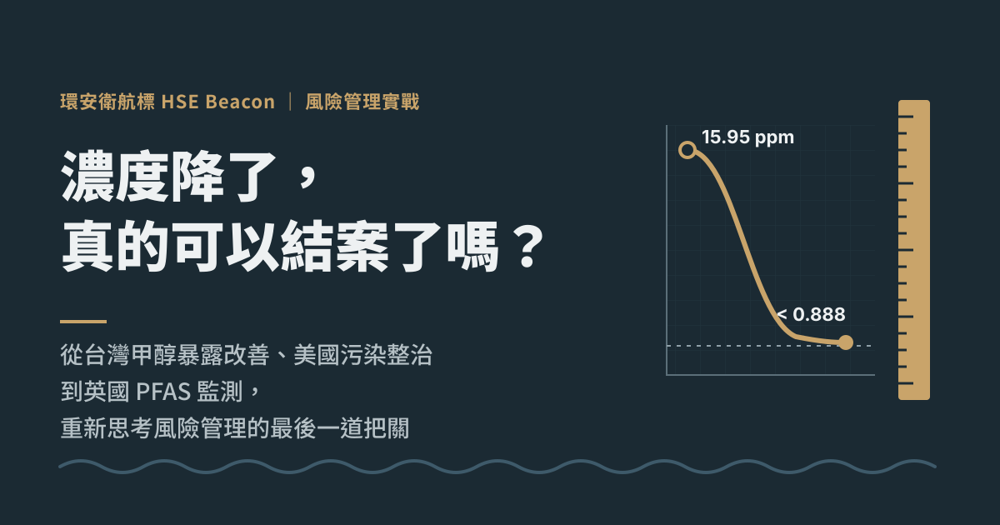

風險管理實戰 ／ 第 03 期專文
濃度降了，真的可以結案了嗎？
從台灣甲醇暴露改善、美國污染整治到英國 PFAS 監測，重新思考風險管理的最後一道把關

一、那組從 15.95 降到 0.888 的漂亮數字
我不確定你是哪一個領域的環安衛主管，但今天我們要進入到工廠裡來討論環安衛問題。
會議室裡，工程團隊正在報告一項剛完成的改善工程。
原本的甲醇沾塗作業，因為有機溶劑蒸氣逸散，讓現場操作人員面臨化學物質暴露的風險。
為了解決這個問題，團隊重新設計局部排氣系統，採用後吸槽式氣罩，搭配局部圍封，讓逸散的甲醇蒸氣能在接近污染源的位置被有效捕集。
改善後重新量測，結果相當漂亮。
濃度降低超過 94%。
這不是虛構的情境，而是台灣職安署公布的局部排氣裝置優良改善案例。這項工程也獲得優良案例競賽特優獎的肯定。
對工程團隊而言，這當然值得高興。
它證明了適當的工程設計，可以比單純要求人員佩戴防護具、加強宣導，更直接地降低作業環境中的污染物濃度。
但假設這份報告現在送到你面前，等著你簽名結案。
你會直接簽下去嗎？
這不是賣身契，也不是要你簽自願役，但是在簽之前，我們可以先問幾個問題。
- 「這個數值是在什麼作業條件下量到的？」
- 「改善前後的採樣位置、工作負荷與採樣方式相同嗎？」
- 「其他班別、其他站位，或清潔保養時的暴露情況呢？」
- 「這套設備運轉三個月、半年之後，還能維持相同的效果嗎？」
這些問題不是為了否定工程團隊的努力。
相反地，正因為這是一項值得肯定的改善，我們才更應該清楚說明：這組數字究竟證明了什麼，又有哪些事情還沒有得到答案？
公開案例中的數字，足以支持這項局部排氣改善取得了顯著成果。但在沒有完整採樣條件、暴露評估與後續維護資料的情況下，我們不能直接把它擴大解讀成所有操作人員、所有作業條件下的暴露風險都已經受到完整控制。
更不能只因為一個數值下降，就宣布整個化學品暴露管理已經完成。
這讓我想到環安衛管理中一個經常被忽略的問題。
我們到底是在驗收一項改善工程，還是在確認一個風險已經受到有效控制？
這兩件事，看起來很像，實際上卻有著很大的差別。
二、為什麼我們總是急著結案？
在離岸風電的營運維護（O&M）與承攬商管理工作中，我經常接觸各種風險評估、設備改善、稽核缺失，以及事故後的矯正預防措施。
多年下來，我發現組織有一種很自然的傾向。
我們喜歡完成事情。
設備裝好了，準備結案。
程序更新了，準備結案。
教育訓練完成了，準備結案。
改善照片拍了、簽核紀錄補齊了，就準備把追蹤表上的「追蹤中」改成「已結案」。
這其實不難理解。
對專案管理者而言，尚未結案的工作代表待辦事項、資源需求與持續的管理壓力。
對承攬商而言，可能還牽涉驗收、付款、工期與績效。
而對環安衛人員而言，管理報告裡的矯正措施結案率（CAPA Closure Rate），也經常是主管關心的指標。
於是，我們開始不自覺地追求一件事：
讓問題從清單上消失。
但問題從清單上消失，不代表風險也跟著消失。
想像一項設備安全改善。
承攬商已經完成防護裝置安裝，提交施工照片、測試紀錄及更新後的風險評估。
從工程交付的角度來看，工作可能確實完成了。
可是，如果我們還沒有確認設備在異常情況下的反應、維修人員的介入方式，以及不同操作條件下的安全功能，那麼「設備已安裝」就不應該直接等於「風險已完全受控」。
這正是管理系統最容易產生誤判的地方。
我們把一個局部的改善成果，當成整體問題已經解決的證據。
而當所有報表都顯示「已完成」時，反而更少有人願意繼續追問：
「還有哪些事情沒有被驗證？」
真正成熟的管理，不是不允許結案。
而是必須先說清楚：
我們準備結束的，究竟是哪一個範圍、哪一個階段，以及哪一項責任？
三、既然土壤已經達標，為什麼還不能開香檳？
2026 年 11 月 12 日，美國環保署（EPA）公布了一項值得關注的污染整治成果。
地點位於美國內布拉斯加州 York。
當地一處受到四氯乙烯（Tetrachloroethene, PCE）污染的場址，長期面臨土壤與地下水污染問題。
PCE 過去廣泛應用於乾洗等工業用途，若處理不當，可能滲入土壤與地下水，形成持續性的環境風險。
為了加速改善，EPA 採用了原位熱整治技術（In-situ Thermal Remediation）。
簡單來說，就是在受污染的土壤中導入熱能，使污染物揮發，再透過抽取與處理系統移除污染物。
這項技術讓原本可能需要超過 15 年的傳統整治工作，在約兩年內達成特定土壤源區的清理目標。
更重要的是，EPA 透過不同深度與採樣位置的實驗室分析，確認第七街源區（Operable Unit 01，簡稱 OU01）的土壤已達到既定整治標準。
這是一項實質的工程成果。
但 EPA 並沒有因此宣布整個污染場址已經完全整治完成。
因為這個場址不只有一個問題。
它至少包含三個不同的整治單元：
- OU01：第七街土壤污染源區。
- OU02：第五街土壤污染源區。
- OU03：場址地下水污染羽流。
其中，OU02 已於 2025 年達成土壤清理目標；OU01 則在 2026 年確認達標，接下來仍有設備移除與場址復原工作。
至於地下水污染羽流，則是下一階段必須持續處理的問題。
這裡有一個很值得學習的管理觀念。
土壤整治達標，是一項可以被確認的成果；但它不等於地下水污染也已經解決。
EPA 沒有因為一個整治單元取得成功，就把其他仍需處理的問題一起劃掉。
這不是故意讓專案永遠無法結案。
而是清楚區分不同整治範圍的完成條件。
對管理者而言，這是一個重要提醒：
階段性結案不等於全案結案。
一個大型問題，可以被拆成不同的工作範圍，分別設定驗收標準、完成時間與責任人。
已經達成的成果應該被肯定。
但尚未完成的工作，也必須被清楚保留下來，並正式移交給下一階段的管理機制。
真正危險的，不是專案仍有未完成事項。
而是我們明明知道問題還存在，卻因為某一項成果很漂亮，就讓整個案件從管理系統中消失。
四、十年後濃度下降了，為什麼英國仍不敢說問題已經解決？
另一個值得思考的案例，來自英格蘭環境署（Environment Agency）。
2026 年 11 月，英格蘭環境署公布了最新的 PFAS 環境監測報告。
PFAS 是一大類人工合成化學物質，因為部分物質在環境中非常難以分解，經常被稱為「永久性化學物質」（Forever Chemicals）。
它們可能存在於不同工業製程、消費產品及環境介質之中。
經過長期監測，英格蘭環境署發現了一個令人鼓舞的趨勢。
2016 年至 2025 年間，在相關河川監測資料中：
- PFOS 濃度約下降 30%。
- PFOA 濃度約下降 29%。
這代表過去針對部分 PFAS 的限制、使用方式改變及相關管理措施，已經有可觀察的環境改善成果。
但英格蘭環境署並沒有因此宣告 PFAS 污染問題已經解決。
為什麼？
因為 PFAS 並不是只有 PFOS 和 PFOA 兩種物質。
它是一個龐大的化學物質家族。
即使部分較早受到管制的 PFAS 濃度下降，其他物質仍可能存在於河川、地下水、湖泊、海岸環境，以及魚類等生物體內。
更麻煩的是，隨著分析技術進步，我們能夠偵測的物質種類與濃度範圍，也可能和十年前不同。
這代表長期監測不能只把不同年份的數字直接放在一起比較。
我們還必須考慮：
- 採樣地點是否改變？
- 檢測方法是否更新？
- 偵測極限是否不同？
- 監測的化學物質種類是否增加？
如果這些條件沒有被適當記錄與分析，原本看似漂亮的趨勢，就可能被誤解。
當然，這不代表英格蘭環境署公布的下降趨勢不可靠。相反地，官方運用了長期資料與統計分析，支持部分 PFAS 濃度確實下降的結論。
但這項成果的證據邊界同樣清楚：
部分物質的濃度下降，不代表所有 PFAS 的環境風險都已經消失。
對風險管理者而言，這裡還有另一個值得記住的觀念。
改善成果不只需要明確的驗收範圍，也需要適當的時間尺度。
一個月的數據，可能足以確認設備調整後的初步效果。
但若要評估長期污染、慢性暴露或環境變化，可能需要數年，甚至更長時間的監測。
有些問題可以透過一次驗收確認，有些問題則必須靠持續追蹤才能逐步建立信心。
我們不能因為希望專案盡快結束，就要求所有風險都在同一個時間點得到最終答案。
五、真正的結案標準：先定義什麼叫做「完成」
把台灣甲醇改善、美國土壤整治，以及英國 PFAS 監測三個案例放在一起，我認為它們共同提醒了我們一件事：
結案不是一個行政動作，而是一項需要證據支持的管理判斷。
這也讓我重新思考，當我們在承攬商管理、設備改善或事故調查中使用「Closed」這個狀態時，究竟代表什麼。
因此建議把結案管理拆成三個步驟。
第一步：定義範圍——我們到底要解決什麼？
改善工作開始之前，就應該先定義驗收邊界。
以甲醇暴露改善為例，必須釐清改善目標是降低某個作業點的空氣濃度，還是確保特定工作族群的個人暴露受到有效控制。
兩者相關，但並不相同。
工作場所的定點濃度改善，不一定能直接代表每位作業人員整個工作班次的實際暴露。
如果管理目標是人員暴露控制，就需要依照適用法規、暴露評估方法及實際作業條件，取得相應的證據。
而在大型污染整治專案中，則需要明確區分不同區域、污染介質與整治階段。
最重要的是，不能在驗收時偷偷擴大改善成果所代表的範圍。
第二步：驗證效果——我們憑什麼認為它有效？
工程完成後，不能只看設備是否已經安裝。
我們還要確認它是否達到原先設定的控制目標。
這可能需要量測、功能測試、現場觀察、作業抽查或其他適當的驗證方式。
而驗證條件必須具有代表性。
例如，局部排氣系統在低工作負荷下表現良好，不代表高負荷時一定具有相同的捕集效果。
同樣地，承攬商在預先安排的稽核當天遵守程序，也不一定能代表日常工作中的執行情況。
因此，我們應該在改善前就盡可能定義：
- 要量測什麼？
- 在什麼條件下量測？
- 什麼結果才算達到要求？
- 如果結果不符合預期，下一步該怎麼辦？
這些問題越早說清楚，驗收時就越不容易陷入各說各話。
第三步：安排追蹤——哪些風險還需要繼續管理？
即使改善已經通過驗證，也不代表所有問題都可以永遠從管理清單中消失。
有些控制措施會隨著設備老化、作業方式改變或人員更替而降低可靠性。
有些環境風險則需要長期監測，才能確認改善是否持續。
因此，結案時應清楚交代：
- 哪些目標已經達成？
- 哪些項目仍待驗證？
- 誰負責後續追蹤？
- 下一次什麼時候確認？
- 什麼情況發生時，必須重新啟動評估？
這樣的管理方式，不是讓每張改善單永遠保持開啟。
而是允許已完成的工作依照明確標準結案，同時確保尚未解決的風險，被正式納入下一個管理階段。
好的結案制度，不是讓所有事情都不能結案，而是不讓未完成的責任隨著結案一起消失。
六、把「完成」和「有效」分開，工作會更清楚
這套觀念其實可以直接應用在我們每天的工作中。
假設你正在追蹤一項承攬商改善措施。
承攬商已經完成設備修改、更新程序並提交紀錄。
你可以將它標示為：
- Stage 1措施已完成（Implemented）
- Stage 2有效性已驗證（Verified Effective）
Stage 1 代表承攬商已經完成約定的改善工作，即便是新增檢查表單或教育訓練，甚至只是在工具箱會議提醒。
但如果還需要在實際作業中確認安全功能，或觀察改善措施是否持續有效，就應該保留第二個狀態：Stage 2，有效性已驗證。
兩個階段不一定要同時完成。
也不一定每項低風險、簡單的改善都需要漫長的追蹤期。
真正重要的是依照風險程度，決定需要什麼證據，以及何時才能合理地宣告改善有效。
例如：
- 一項設備安全互鎖改善，可以透過適當的功能測試確認關鍵功能。
- 一項涉及承攬商行為的改善，可能需要後續抽查，確認新的工作方式已經被實際採用。
- 一項化學品暴露改善，除了初步濃度量測，可能還需要定期檢查、維護與必要的複測。
當我們把「工作完成」和「成果有效」清楚分開，管理者與執行者之間的期待也會更加明確。
主管不需要一直追問「你確定真的改善了嗎？」
承攬商也不必在驗收時才發現，原來業主還期待另一套從未說明的證據。
因為雙方從一開始就知道，什麼叫做完成，以及什麼叫做有效。
這才是好的管理制度應該帶來的效果。
不是增加更多表單，而是減少對完成標準的誤解。
七、生活裡，我們也常常太急著宣布成功
最近在陪伴孩子建立生活習慣時，我也開始注意到自己有類似的傾向。
當孩子連續幾天願意主動刷牙、準時上床睡覺，我很容易感到欣慰，甚至認為新的生活習慣終於建立起來了。
但過幾天，孩子可能因為疲倦、情緒或生活節奏改變，再次出現抗拒。
以前的我，可能會覺得：
「奇怪，明明前幾天都做得很好，怎麼又退步了？」
但現在我會試著換一個角度。
孩子願意配合刷牙，代表我們在那幾天找到了比較順利的互動方式。
這是值得肯定的進步。
但它不代表孩子已經具備在所有情況下都能獨立完成的能力。
習慣的建立，需要時間、環境支持，以及反覆練習。
當然，孩子不是工程專案，我們也不應該用稽核表去衡量每一次親子互動。
只是這個經驗讓我理解：
一次成功，不代表所有問題都已經解決；一次反覆，也不代表之前的努力全部白費。
我們可以肯定階段性的進步，同時接受仍有需要陪伴與調整的地方。
這其實也是一種更健康的完成觀。
不必因為事情尚未達到最終目標，就否定目前的成果。
也不必因為眼前取得成果，就急著宣告往後再也不會遇到問題。
八、真正的專業，是知道什麼時候可以結案
回到最初那組漂亮的數字。
15.95 ppm，降到低於 0.888 ppm。
這是一項值得肯定的工程改善。
如果我們只因為還有其他問題需要追蹤，就否定這項成果，並不公平。
但如果我們把這組數字當成所有暴露風險都已經消失的證明，同樣不負責任。
美國 York 的土壤整治也是如此。
兩個污染源區的清理目標已經達成，值得肯定；地下水污染仍需要後續整治，也必須清楚交代。
英格蘭 PFAS 的長期監測同樣提醒我們，部分物質的濃度下降，是實質進步，卻不是整體環境風險已經消失的證明。
這三個案例並不是要告訴我們，所有事情都不能結案。
恰恰相反。
它們提醒我們，真正專業的管理者，應該有能力明確判斷：
- 什麼已經完成，可以結案。
- 什麼已經改善，但還需要追蹤。
- 什麼尚未獲得充分證據，不能過早宣告成功。
管理的價值，不在於把每一張追蹤表都變成綠色，也不在於讓所有案件永遠保持開啟。
而是讓每一次結案，都有清楚的範圍、足夠的證據，以及妥善安排的後續責任。
當主管問起：「這個問題可以結案了嗎？」
我們不必只回答「可以」或「不可以」。
更有價值的回答是：
「這一階段的改善已經完成，也取得了符合驗收標準的證據。至於其他作業條件與長期有效性，我們已經明確定義追蹤範圍、責任人與下一次驗證時間。」
這不是推託責任。
這才是負責任的結案。
濃度下降不是終點，而是一把幫助我們看清下一層問題的尺。
在複雜的真實世界裡，最高級的負責，從來不是急著宣布「沒事了」。
而是清醒地界定邊界，誠實地面對未知。
讓每一個階段的結案，都成為下一個階段更穩固的起點。
案例來源與延伸閱讀
台灣｜甲醇沾塗作業局部排氣改善
勞動部職業安全衛生署公布的局部排氣裝置優良設計案例，2026.11.03。官方來源
美國｜York PCE Southeast Contamination Superfund 場址
EPA 第 7 區新聞稿，2026.11.12。官方來源
英格蘭｜PFAS 長期環境監測
英格蘭環境署評估報告與新聞稿，2026.11.12。官方來源
- Environment Agency｜PFAS sources, pathways and environmental data (2026) ↗
- Environment Agency 新聞稿｜河川 PFOS、PFOA 分別約下降 30%、29% ↗
本站相關
編輯註：本文以公開案例資訊為基礎，結合作者的環安衛管理經驗提出分析。「Stage 1／Stage 2」與三步驟結案框架為本文的分析框架，並非上述機關採用的管理術語。